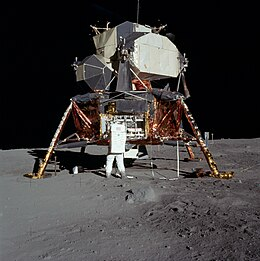

Program Description
The Apollo program, NASA's third human spaceflight initiative, was the United States' effort to land humans on the Moon and bring them safely back to Earth. Launched in 1961 by President John F. Kennedy, the program’s primary goal was achieved in 1969 with the historic Apollo 11 mission, where Neil Armstrong and Buzz Aldrin became the first humans to walk on the Moon. The Apollo program was instrumental in advancing space technology, human spaceflight, and lunar exploration. It consisted of 17 missions, with 11 crewed flights, and included key milestones such as lunar landings, spacewalks, and a range of scientific experiments on the Moon. The program helped cement the United States' leadership in space exploration during the Cold War era. Apollo's legacy continues to influence space exploration today, and it paved the way for future human missions to other destinations in our solar system.
Notable Missions
- Apollo 11: On July 20, 1969, Neil Armstrong and Buzz Aldrin became the first humans to walk on the Moon, while Michael Collins orbited above in the command module.
- Apollo 12: In November 1969, Charles "Pete" Conrad and Alan L. Bean became the second crew to land on the Moon and successfully conducted a variety of experiments.
- Apollo 13: Launched on April 11, 1970, this mission faced a critical in-flight emergency when an oxygen tank exploded. Despite the crisis, the crew returned safely to Earth, showcasing NASA's ability to overcome challenges.
- Apollo 14: In February 1971, Alan Shepard and Edgar Mitchell explored the Moon's surface and collected lunar samples, continuing the exploration of the lunar highlands.
- Apollo 17: The final Apollo mission in December 1972, with Eugene Cernan, Harrison Schmitt, and Ronald Evans, marked the last human visit to the Moon, ending the program on a high note with significant scientific discoveries.
Notable Astronauts
- Neil Armstrong: The first human to walk on the Moon during Apollo 11, a milestone in space history.
- Buzz Aldrin: The second person to walk on the Moon and a key figure in the success of Apollo 11.
- Michael Collins: The Apollo 11 command module pilot who orbited the Moon while Armstrong and Aldrin explored the surface.
- Jim Lovell: The commander of Apollo 13, whose crew overcame a life-threatening emergency and returned safely to Earth.
- Alan Shepard: The first American in space and later the commander of Apollo 14, where he conducted a lunar golf swing.
- Eugene Cernan: The last person to walk on the Moon during Apollo 17 and the final human to leave the lunar surface.
- Jack Swigert: The Apollo 13 astronaut whose calm under pressure helped save the mission.
Spacecraft
The Apollo spacecraft consisted of two main components: the Command Module (CM) and the Lunar Module (LM). The Command Module housed the astronauts during launch, the journey to and from the Moon, and re-entry into Earth's atmosphere. The Lunar Module was specifically designed for the Moon landing and was capable of landing on the lunar surface and returning the astronauts to the Command Module in lunar orbit. Both modules were launched together atop the Saturn V rocket, the most powerful rocket ever built. The Saturn V’s enormous size and power enabled it to carry astronauts beyond Earth's orbit to the Moon. The spacecraft and its systems were rigorously tested and designed for safety, durability, and the complexity of the lunar landing missions.
